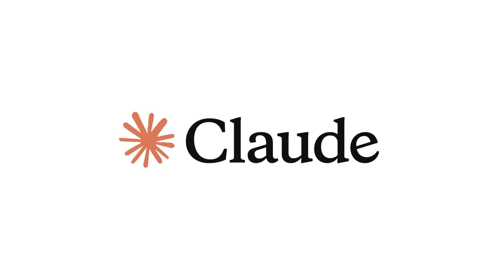
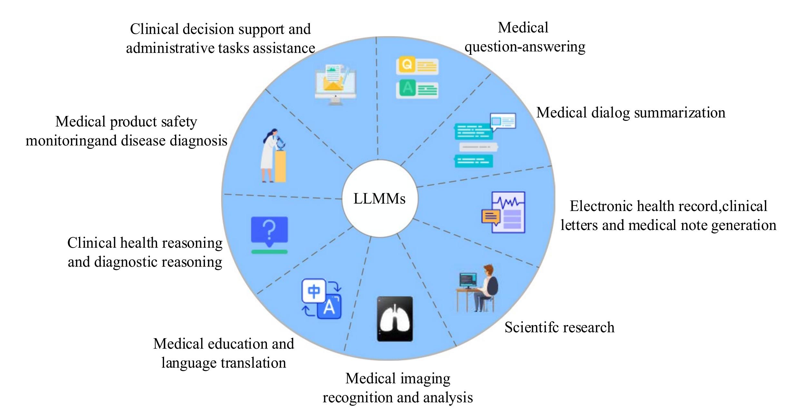
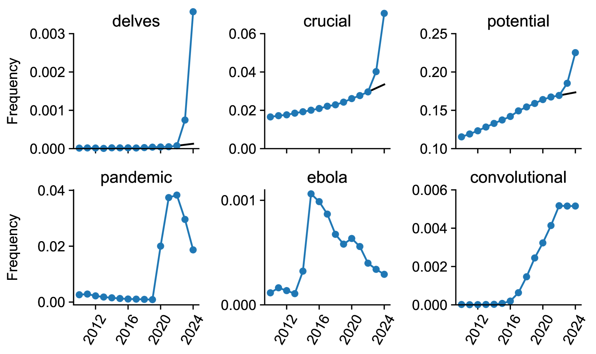
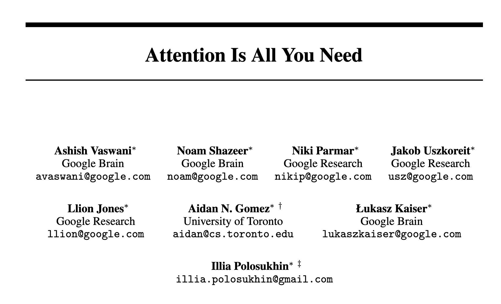
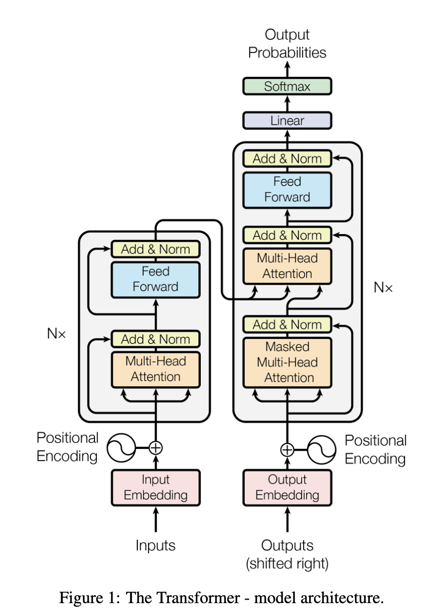
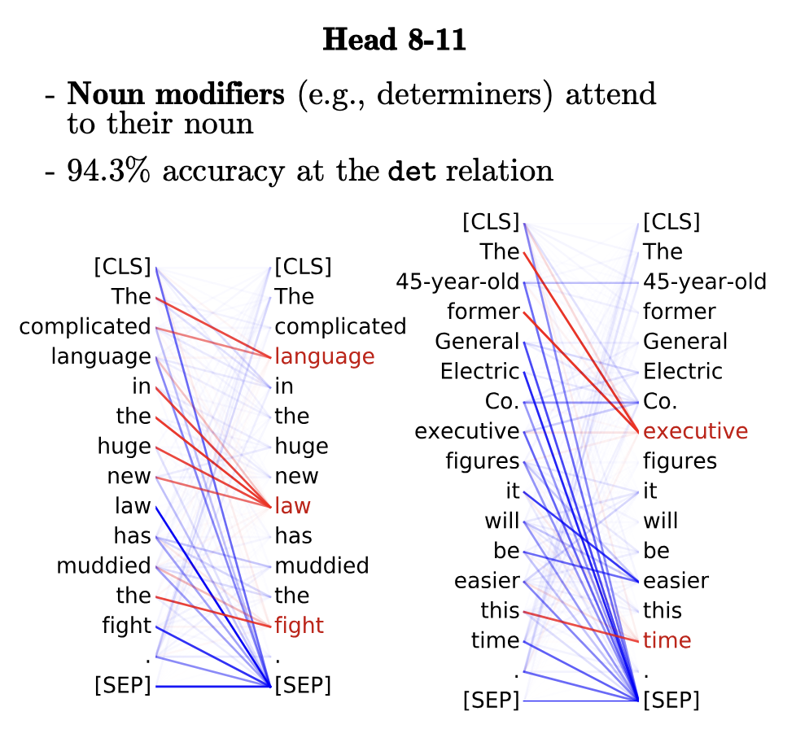
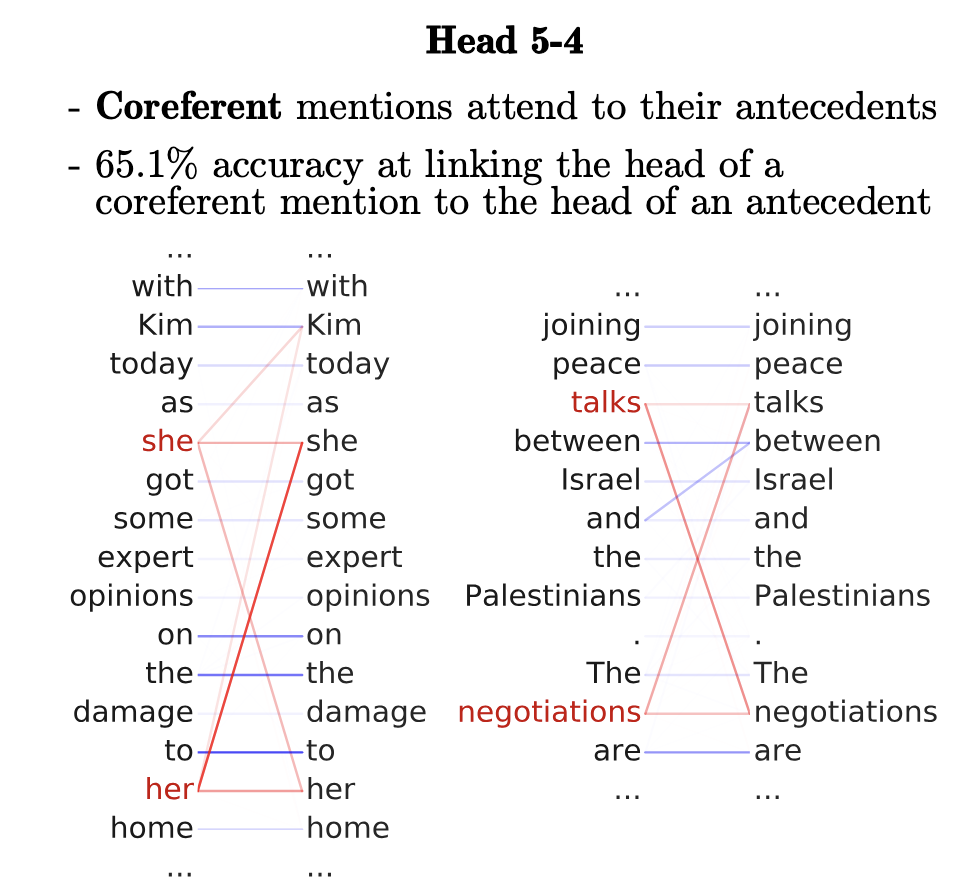

Linguistic Data Analysis II
Day 1 · Introduction & First Experience
Masaki EGUCHI, Ph.D.
Tohoku University · Summer 2026
Since OpenAI released ChatGPT in late 2022, Large Language Models (LLMs) have now become common tools — for searching, translating, coding, and more.


Wang, D., & Zhang, S. (2024). Large language models in medical and healthcare fields: Applications, advances, and challenges. Artificial Intelligence Review, 57(11), 299. https://doi.org/10.1007/s10462-024-10921-0
Kobak et al. (2025) tracked word frequencies across 15 million PubMed abstracts (2010–2024).
The authors estimate that at least 13.5% of 2024 abstracts were written with help from an LLM — over 40% in some journals and countries.
How to look at the charts:

Kobak, D., González-Márquez, R., Horvát, E.-Á., & Lause, J. (2025). Delving into LLM-assisted writing in biomedical publications through excess vocabulary. Science Advances, 11(27), eadt3813. https://doi.org/10.1126/sciadv.adt3813
Already tons of research uses LLMs in Applied Linguistics:
| Study | What it annotated |
|---|---|
| Kim & Lu (2024), JEAP | rhetorical moves in article abstracts |
| Mizumoto (2025), SSLA | L2 errors — r = .94 with human raters, F1 = .95 |
| Yamashita (2024), RMAL | essay scores |
So the question isn’t whether linguists will use them. It’s how to use them responsibly for linguistic analysis.
One especially promising use is annotation — labelling language data for analysis.
So the question arises: can an LLM do this annotation for us?
Question you might have: Can we trust an LLM on annotating this?
Until today
OR
After this course
We will learn methodology to investigate LLM’s capability for lingusitic data analysis.
Tell us:
Tell us:
By the end of this course, you will be able to:
| Area | Objective |
|---|---|
| Critical appraisal | Explain what LLMs can and cannot do for linguistic analysis, and judge when an LLM-based approach is appropriate. |
| Annotation scheme | Adapt and operationalize an existing annotation scheme and its coding guidelines. |
| Gold-standard datasets | Build a gold-standard dataset, including assessing inter-annotator agreement. |
| Prompt design | Design, tune, and document prompts that elicit reliable annotations from an LLM. |
| Evaluation | Evaluate model performance with precision, recall, F1, and confusion matrices, and interpret the results critically. |
| Reproducibility | Report methods and findings transparently and reproducibly. |
| Day | Focus |
|---|---|
| 1 | What is LLM, Python basics, call an LLM |
| 2 | Gold standard + agreement — how to define and measure quality |
| 3 | Prompt + iterate against metrics - how to use LLM |
| 4 | Method + assemble the pipeline |
| 5 | Your own data + present |
| Component | Percent | |
|---|---|---|
| Attendance / participation | 20% | |
| Hands-on activities (Day 1–3) + completed notebook | 40% | |
| Mini-project group presentation + Q&A | (Day 5) | 20% |
| In-class one-page report | (Day 5) | 20% |
All project work is produced and submitted during the course — there is no post-course write-up. The completed notebook, run end-to-end with your group’s gold subset, prompt, and evaluation output, is the evidence that the hands-on work was done.
By the end of this session, you will be able to:
An LLM produces annotations, and you must check them against a gold standard before you report them. It can be applied to the linguistic tasks you already work on.
Everything this week is a method for doing that checking. Today we explain why the checking is necessary.
What is a Large Language Model (or LLM)?
Grant Sanderson (3Blue1Brown), Large Language Models explained briefly.
While you watch, write down an answer to each of these:
We come back to all three afterwards, with a language example.
LLM encodes language into numbers — The fundational NLP technique called embedding.
Embedding: “vector representations of the meaning of words that are learned directly from word distributions in texts” (Jurafsky & Martin, 2026, p. 96).
Two families, and we build up to both:
A vector is a list of numbers that fixes the location of something in a space. A colour, for example, is fixed by how much red, green and blue it has.
Move the sliders to change the colour. Drag the cube to rotate it.
The dashed path is the vector: R along red, then G along green, then B along blue. The number under each name is the distance from your colour to that colour — close in the space = similar colour. Word embeddings work the same way, with hundreds of numbers instead of three.
Q: How can a machine learn meaning?
A: The answer is by studying Co-occurrence.
| Left context | Node | Right context |
|---|---|---|
| is traditionally followed by | cherry | pie, a traditional dessert |
| often mixed, such as | strawberry | rhubarb pie. Apple pie |
| computer peripherals and personal | digital | assistants. These devices usually |
| a computer. This includes | information | available on the internet |
Count, by hand: how often does each of a, computer and pie appear in each of those four windows?
The table on the right counts co-occurence frequency.
| Left context | Node | Right context |
|---|---|---|
| is traditionally followed by | cherry | pie, a traditional dessert |
| often mixed, such as | strawberry | rhubarb pie. Apple pie |
| computer peripherals and personal | digital | assistants. These devices usually |
| a computer. This includes | information | available on the internet |
| a | computer | pie | |
|---|---|---|---|
| cherry | 1 | 0 | 1 |
| strawberry | 0 | 0 | 2 |
| digital | 0 | 1 | 0 |
| information | 1 | 1 | 0 |
Already suggests some topical clustering. Each row is that word’s vector: cherry = [1, 0, 1].
Now count every occurrence in Wikipedia.
Six of the columns becomes (Jurafsky & Martin, 2026, p. 103):
| aardvark | … | computer | data | result | pie | sugar | … | |
|---|---|---|---|---|---|---|---|---|
| cherry | 0 | … | 2 | 8 | 9 | 442 | 25 | … |
| strawberry | 0 | … | 0 | 0 | 1 | 60 | 19 | … |
| digital | 0 | … | 1670 | 1683 | 85 | 5 | 4 | … |
| information | 0 | … | 3325 | 3982 | 378 | 5 | 13 | … |
cherry and strawberry have similar rows. digital and information have similar rows.
The distributional principle
This clustering emerges without anyone writing a dictionary. Again “You shall know a word by the company it keeps!” (Firth, 1957, p. 11).
Look at the aardvark column on the previous slide. All four words score 0. None of them ever occurs near aardvark.
| aardvark | … | computer | data | result | pie | sugar | … | |
|---|---|---|---|---|---|---|---|---|
| cherry | 0 | … | 2 | 8 | 9 | 442 | 25 | … |
| strawberry | 0 | … | 0 | 0 | 1 | 60 | 19 | … |
| digital | 0 | … | 1670 | 1683 | 85 | 5 | 4 | … |
| information | 0 | … | 3325 | 3982 | 378 | 5 | 13 | … |
Co-occurrence table is sparse, about 99 in every 100 columns are 0.
We can apply factor analysis to a co-occurrence table to reduce meaning.
Factor analysis
A statistical method for uncovering the latent structure of data:
enjoyment and boredom.observed variables.latent variables that predict the values of the observed variables.. . .
| item | Enjoy | Bored |
|---|---|---|
| ENJ1 · I look forward to class | 0.82 | −0.11 |
| ENJ2 · I enjoy the activities | 0.79 | −0.08 |
| ENJ3 · Class time passes quickly | 0.74 | −0.15 |
| BOR1 · My mind wanders in class | −0.09 | 0.80 |
| BOR2 · I lose interest quickly | −0.13 | 0.85 |
| BOR3 · Class feels slow | −0.10 | 0.77 |
Six items, two latent variables. Each item loads high on one and near zero on the other.
Treating the words in corpus like observed variables in factor analysis, we explore underlying dimensions of meaning.
By applying dimensional reduction, a word will associate with “latent” dimension, which explains some underlying semantic distribution in corpus.
| dimension 1 | dimension 2 | |
|---|---|---|
| computer | 0.651 | −0.009 |
| data | 0.756 | 0.004 |
| result | 0.066 | 0.019 |
| pie | 0.001 | 0.998 |
| sugar | 0.002 | 0.061 |
Nobody assigned these weights — they were derived from the corpus counts. This technique is called Latent Semantic Analysis (LSA) (Landauer, 1999).
BUT LSA has some limitations:
→ We want to model the dimension without huge co-occurrence table and focusing on local co-occurence.
Take a target word and one word near it. Did this pair really occur together?
The corpus already knows the answer, so no one has to label anything.
Learn the vector representation that predicts real co-occurence in corpus as YES and fake ones as NO.
Word2Vec learns this through thousands of trials.
We then often only keep W (while sometimes use both W and C).
In 2018, the paper “Attention is All You Need” published. The introduction of self-attention changed everything.

Attention Is All You Need
Self-attention builds the vector for bank on the fly, using the contexts (Jurafsky & Martin, 2026, p. 178).
Every word turns itself into three separate vectors. bank uses its q; every other word offers its own k for the comparison and its own v for the sum.



Clark, K., Khandelwal, U., Levy, O., & Manning, C. D. (2019). What Does BERT Look At? An Analysis of BERT’s Attention (arXiv:1906.04341). arXiv. https://doi.org/10.48550/arXiv.1906.04341
It can label categories that depend on context. Most of the categories linguists work with are of that kind, and a bag-of-words model could never represent them.
One model, many tasks. Generative model can do many things with a prompt. We do not train a new model for each task with a new annotated training set.
Quick iteration: Annotation is painstaking, but you can iterate with LLM early.
An LLM essentially learns to predict next plausible word.
Plausible is not the same as correct — which is exactly what Curry et al. found when the output read well and the analysis was wrong.
That’s why we still need NLP evaluation.
Historically each task had its own model — a POS tagger, an NER model, a parser.
Already tons of research uses LLMs:
| Study | What it annotated | Track you could pick |
|---|---|---|
| Kim & Lu (2024), JEAP | rhetorical moves in article abstracts | RAAMove · CaRS-50 |
| Mizumoto (2025), SSLA | L2 errors — r = .94 with human raters, F1 = .95 | AutoErrorAnalyzer |
| Yamashita (2024), RMAL | essay scores | ICNALE GRA |
Three of these are on your mini-project list. You can pick one as a group to work on conceptual replication.
Important
This course is the evaluation half of NLP, applied to LLMs.
We do not cover the training part of NLP. The evaluation part provides exactly the rigour an LLM’s outputs need, and that is what you will learn to run this week.
What was new information to you about LLM?
Given the lecture, are you optimistic or skeptical about the use of LLM? Why do you think so?
| Day | Focus |
|---|---|
| 1 | What is LLM, Python basics, call an LLM |
| 2 | Gold standard + agreement — how to measure quality |
| 3 | Prompt + iterate against metrics |
| 4 | Method + assemble the pipeline |
| 5 | Your own data + present |
Linguistic Data Analysis II